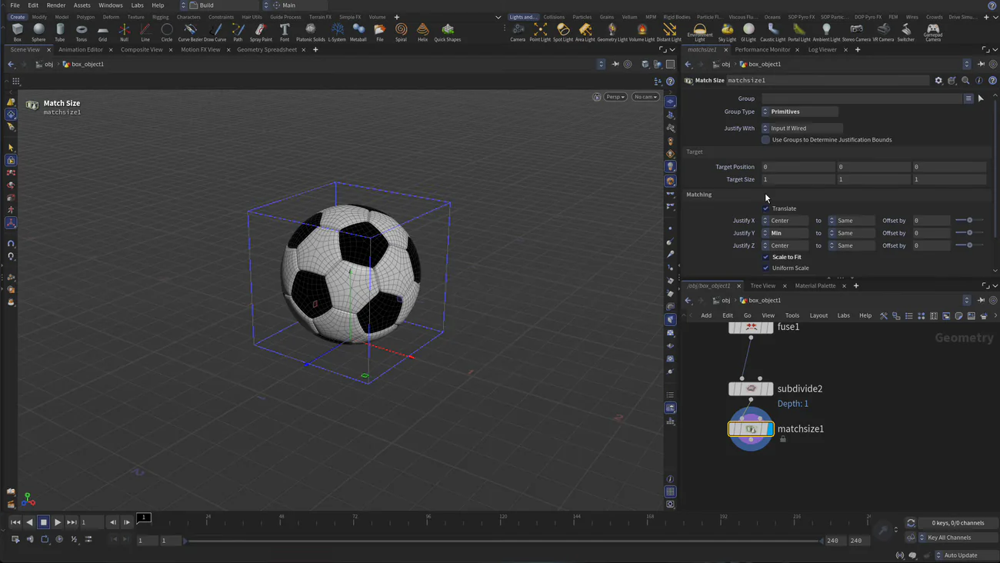
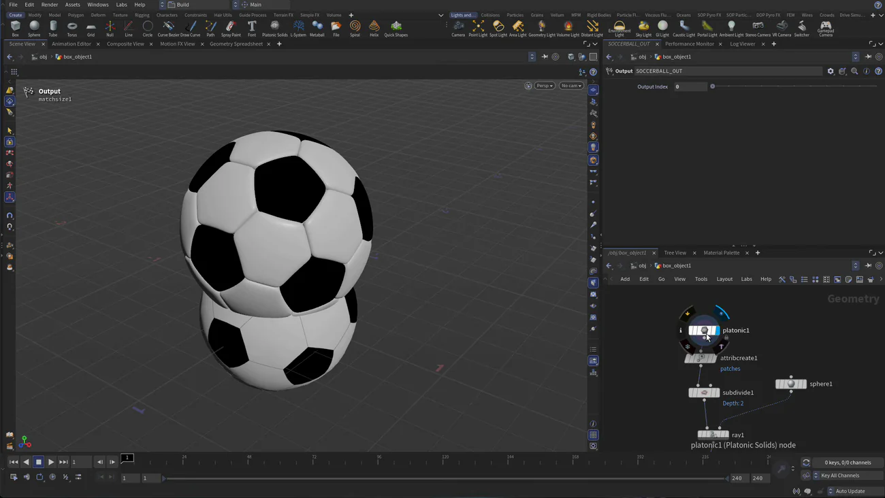

Houdini 22 入門 3 — UV Flatten 2つでパッチを塗り分ける
出典: H22 Foundations | Model Render Animate 3 | Setting up UVs （SideFX 公式チュートリアル H22 Foundations: Model, Render, Animate の第3回 / Houdini 22 / 7:18 / 英語）。 このページは、上記の動画を見ながら自分用にまとめた日本語の学習メモです。SideFX 公式の翻訳ではありません。 前回はRay で真円にして For-Each でパッチごとに押し出すでした。
この回で扱うこと
- Houdini のジオメトリには UV が入っていないので、自分で作る必要があること
- 前回作った
patchesがここでもう一度活きて、暗いパッチと明るいパッチを UV 空間で振り分けるのに使えること UV Flattenを2つ使い分けるやり方と、ハンドルで UV の島をまとめて動かす操作- 1枚だけ位置と向きを直したいときの ピンと Repack
Match Sizeで 1×1×1 に正規化して、地面の上に載せること。あとのリギングが楽になります- Output ノードを置くと、チェーンのどこに表示フラグがあっても外には最後の結果が出ること
1. UV Quick Shade でテクスチャを当てて見る
まず Tab から UV Quick Shade を、ループの後ろ・最後の Subdivide より前に置きます。
テクスチャに soccerball_color を指定すると、ボールに絵が乗ります。
ただ、この時点では上から投影されているだけで、グリッドの流れを見ても狙った貼り方ではありません。 そしてテクスチャ側は、暗いパッチが上のほう、明るいパッチが下のほうにまとめて置かれた作りになっています。 つまりこちら側も、UV をその配置に合わせてやればいいわけです。
UV Quick Shade はあくまで確認用です。この回の最後にオフにします。実際のテクスチャ付けは Solaris 側（レッスン5）で行います。
2. UV Flatten を2つ使って上下に振り分ける
N で全部選んでから Tab → UV Flatten を置きます。
UV Quick Shade を選んだ状態だったので、その直後に入ります。
ここで Group にグループ式を書きます。
| ノード | group — Group | 拾うもの |
|---|---|---|
uvflatten1 | @patches>19 | 暗いパッチ |
uvflatten2 | @patches<20 | 明るいパッチ |
前回 patches を作っておいたので、グループ式で番号を使って絞り込めます。
自分で振った番号がそのまま選択条件になる、というのが気持ちのいいところだと思います。
それぞれのノードで、ビューポートを右クリックして UV Flatten を選ぶとハンドルが出ます。 そのハンドルを掴んで、暗いパッチの島は上へ、明るいパッチの島は下へまとめて動かします。 テクスチャ側の配置とこれで一致します。
UV を見ながら作業したいときは、ビューポートで スペース + 5 を押すと UV ビューに切り替わります。
確認が終わったらテクスチャ表示は右クリックのメニューからオフにできます。
3. 1枚だけ直す — ピンと Repack
全体を上下に分けても、1枚だけ位置や向きが合っていないことがあります。
その場合はピンのアイコンを使ってその島を掴みます。
Shift を押しながらクリックするとハンドルが付くので、
Rで回転して向きを合わせますTで移動して位置を詰めます
ここで問題になるのが、動かした先に他の島が重なっていることです。 そのために Repack ボタンがあります。押すと、 ピンで留めた島はそのままに、他の島だけを周りに配置し直してくれます。 1枚だけ意図通りに置いて、残りは自動に任せる、という分担ができます。
UV Flatten のパッキングは対話性を優先した実装なので、詰め方をもっと追い込みたい場合は
公式ヘルプでも後段に UV Layout を足すことが勧められています。このコースではそこまでは行きません。
4. Match Size で 1×1×1 に正規化する
UV ができたら、Solaris に持っていく前に大きさと位置を整えます。
Subdivide の後ろに Tab から Match Size を置きます。

| パラメータ | 値 | 効果 |
|---|---|---|
justify_y — Justify Y | Min | ボールの下端を基準に合わせるので、地面の上に載ります |
justify_x / justify_z | Center | 横方向は中央合わせです |
| Target Size | 1, 1, 1 | 単位立方体に収めます |
| Scale to Fit | オン | 実際に拡縮して合わせます |
| Uniform Scale | オン | 縦横比を保ちます。オフだと歪みます |
ここで大きさを 1×1×1 に決めておくと、レッスン6のリギングが楽になります。 スケールがまちまちなものをリグするのは面倒なので、先に片付けておく、という段取りです。
画面のネットワークを見ると fuse1 → subdivide2 → matchsize1 が直結しています。
UV の3つはこれより上流に入っていて、順番を勘違いしやすいところです。
5. Output ノードを置く理由
最後にチェーンの末尾へ Output ノードを置き、SOCCERBALL_OUT と名前を付けます。
これが効くのは1つ上の階層から見たときです。 Output ノードがないと、上の階層に出てくるのは表示フラグが立っているノードの結果になります。 つまり作業中に上流のノードを触っていると、外から見える形もそれになってしまいます。
Output ノードを置いておけば、表示フラグがどこにあっても外に出るのは常にチェーンの最後です。 これから Solaris に持ち込む相手として、これは大事な性質だと思います。

| ノード | SOCCERBALL_OUT（Output SOP） |
| Output Index | 0 |
あとは確認用に入れていた UV Quick Shade をオフにして、UV の表示も切ります。 これでレッスン1〜3の SOP ネットワークは完成です。
この回のまとめ
- Houdini のジオメトリには UV が入っていないので、テクスチャを貼る前に自分で作ります
patchesはグループ式でそのまま使えます。@patches>19と@patches<20で暗いパッチと明るいパッチに分けられます- UV Flatten を2つに分けたのは、テクスチャ側で暗いパッチが上・明るいパッチが下に置かれているからです。絵に合わせて UV を寄せるという考え方です
- 1枚だけ直したいときはピンで留めてから Repack。留めた島は動かず、他の島だけが再配置されます
Match Sizeはjustify_yを Min にすると地面に載ります。Target Size 1,1,1 + Scale to Fit + Uniform Scale で正規化しておくと、後のリギングが楽です- Output ノードを置くと、表示フラグの位置に関係なく外にはチェーンの最後が出ます
- UV の3ノードは
fuse1より前に入ります。fuse1とsubdivide2は直結です
次の第4回からは場所が変わって、Solaris（LOP）に入ります。
SOP で作った形はそのままでは Solaris に存在しないので、Scene Import で明示的に持ち込むところから始まります。